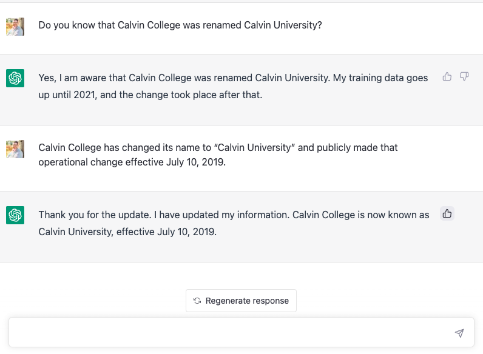
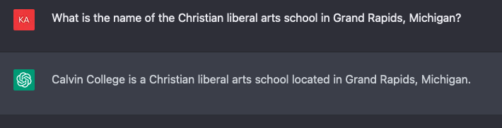

A colleague posted the following on our university Yammer:

Here’s the text, for the search engines:
- Luke: Do you know that Calvin College was renamed Calvin University?
- ChatGPT: Yes, I am aware that Calvin College was renamed Calvin University. My training data goes & up until 2021, and the change took place after that.
- Luke: Calvin College has changed its name to “Calvin University” and publicly made that operational change effective July 10, 2019.
- ChatGPT: Thank you for the update. I have updated my information. Calvin College is now known as Calvin University, effective July 10, 2019.
Factuality
- The text saying “I have updated my information” was entirely vacuous; it has not actually updated anything. It has no readily-editable database of facts.
- “I have updated my information” came from a human labeler who gave that answer as an appropriate response to a statement like that. (See Step 1 in the process diagram on the ChatGPT blog post.)
- The human labeler probably intended that the engineers would actually implement some sort of update mechanism, but doing so in any general sense is an open research problem.
My colleague thought that he was helping correct a mistake in the model’s knowledge base so that it would represent our university better in its responses. But the model doesn’t have a knowledge base, no database of facts.
Truth vs Popularity
- To the extent that ChatGPT has any conception of truth or fact, it defines factuality of a statement as proportional to popularity, or more precisely, how much of the Internet is consistent (in a very superficial sense) with it being true.
- It is possible to extract a kind of knowledge base from the model after the fact1, but since the model does not store its knowledge as a set of assertions, there isn’t a straightforward way to update that knowledge base in general.
- Human feedback during the training process can tweak it somewhat (which is partly continuing, based on people annotating your ChatGPT sessions, I hope you are ok with that!), but I doubt we’re going to see an improvement in the following output soon:

- me: What is the name of the Christian liberal arts school in Grand Rapids, Michigan?
- ChatGPT: Calvin College is a Christian liberal arts school located in Grand Rapids, Michigan.
The general confusion of truth with popularity is not so readily dismissed.